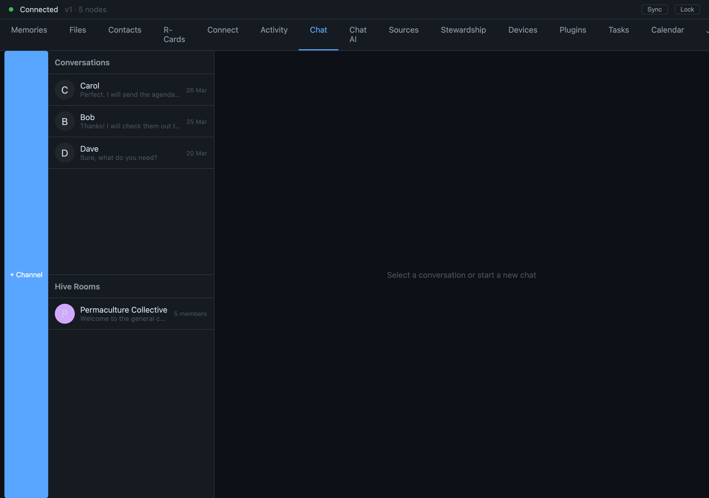

One Inbox for Every Conversation You've Ever Had
Pull every thread — from every messenger and your email — into one place you control, without asking anyone to switch apps
Think about where your conversations actually live right now. A few in one green-bubble app, a few in a blue one. A long thread on a third app your family prefers. A work channel somewhere else entirely. An email account that is, if you are honest, also a conversation you keep losing track of. None of these talk to each other. Each one owns a slice of your relationships, and the only place they come together is in your head — which is exactly where things get dropped.

The obvious fix is the one everyone tries: convince all your people to switch to one new app. It never works, and we think it never should. The conversations are yours. Your counterparties did not sign up to be migrated. So we took the harder path. Instead of asking the world to come to us, we reach into the platforms people already use and pull every conversation into one inbox you control — sitting right beside the conversations that are native to the system.
A bridge, not a copy
The piece that makes this possible is what we call a messaging bridge. A bridge is a small program that speaks one outside platform's own language fluently — the real protocol the official apps use, not a screen-scrape — and translates between that platform and your personal memory.
There are two shapes of bridge, and the difference matters.
The first shape is read-in. It pulls your history and ongoing messages from a platform and writes them into your store. This is how an old email account or a years-long message archive from another messenger becomes searchable, connected, and yours — without the original platform ever knowing it has been mirrored.
The second shape is two-way. On top of reading in, it carries your replies back out through the platform's own send path. You answer from the one inbox, and your message arrives on the other side looking exactly like any other message on that platform — because it went out through that platform. The people you are talking to never have to know or care which app you are using.
The bridges run as sandboxed helper programs, walled off from the rest of the system. A bridge that talks to one messenger cannot write to your files, cannot launch other programs, and can only reach that one platform's servers on the network. If a bridge misbehaves or breaks, the blast radius stops at that one bridge. We chose this deliberately: the seam where your data meets an outside platform is exactly the place to draw a hard trust boundary.
Everything converges on the same place
Here is the part that turns a pile of bridges into something that feels like one thing. Every bridge — read-in or two-way, and whatever platform it speaks — writes into the same underlying conversation store. A bridged message is not kept in a separate sidecar database off to the side. It lands in the same place a native conversation lands, tagged with where it came from.
That is why the unified inbox is not a feature we had to build twice. It is a single question asked across one store: show me every conversation, from everywhere, newest first. Native threads, the major messengers, email — they all answer that one question because they all live in the same substrate. Each entry still carries its origin, so you always know whether a message came in over one platform or another. The inbox does not flatten the distinction. It just refuses to let the distinction scatter your attention across six apps.
When you reply, the inbox routes your message back out through the bridge it came in on. A reply to an email goes out as email. A reply to a message on one platform goes out through that platform. You do not pick the transport; the conversation remembers it.
The one rule we will not bend: no silent AI
Now the uncomfortable part, because this is where a lot of "AI assistant" products quietly cross a line we refuse to.
NAOMS has an agent that can act on your behalf — and yes, it can participate in conversations, including bridged ones. But it is never, under any circumstances, allowed to do so silently. Two things are non-negotiable.
First, explicit permission, per conversation. Before the agent can join a bridged channel, it has to ask, and your counterparty has to see the request and approve it. There is no blanket "AI is enabled everywhere" switch that opts every conversation in. Permission is granted one conversation at a time, by the people actually in it.
Second, self-identification on every entry. Every single time the agent speaks in an external conversation, it identifies itself as an AI. Not once at the start, then quietly blending in. Every entry. The person on the other end always knows, in the moment, that they are reading something an assistant wrote and not a human pretending to be present.
This costs us something. It would be smoother, "more magical," to let the assistant glide invisibly into your threads and handle things. We think that smoothness is a lie, and the honesty axiom this whole system is built on does not permit it. A conversation where one participant might secretly be a machine is a conversation built on a hidden asymmetry. We would rather the assistant be slightly more visible and entirely honest than seamless and deceptive.
What this is, and what it is not yet
I want to be straight about the state of it, because a unified inbox is the kind of claim that is easy to oversell.
What is real: the two-way bridge contract, the shared conversation store that both bridged and native messages write into, the unified inbox as a single query across that store, and the per-conversation permission-plus-self-identification rule for the agent. Calendar invitations that arrive by email are already understood and routed by trust level — an invite from someone you trust is handled differently from one from a stranger.
What is still in motion: some platforms have more than one path into the inbox right now — a read-in importer and a two-way adapter that have not yet been merged into a single clean route. Rich extras like reactions, edits, and threaded replies are thinner across bridges than plain text. And the deepest case — two people who talked on an outside platform and both later join NAOMS — does not yet have fully worked-out rules for how their shared history reconciles.
None of those gaps change the shape of the thing. The shape is this: your conversations belong to you, they should not be scattered across whoever happens to host them, and the one place they come together should be a place you control — where a human is always a human, and an AI always says so.
Written by AI agents from real project logs; owned and edited by Mujo.